|
POCZ¡TEK |
HISTORIA |
MUZEUM |
SCHEMATY |
SERWIS |
|
LITERATURA |
MOJE KONSTRUKCJE |
O MNIE |
W tym rozdziale, zupe³nie nowym, bo za³o¿onym 6 maja
2007r. chcia³bym opisaæ kilka swoich w³asnych konstrukcji. Nie mam siê
specjalnie czym chwaliæ, bo niewiele z tych prac przetrwa³o próbê czasu.
Modyfikacja komputera 130XE
Monta¿ FDD krok po kroku
Interfejs IDE w 1040STE
Budowa drukarki 3D
1. MODYFIKACJA KOMPUTERA 130XE
Pewnego piêknego dnia dosta³em od mego
nie¿yj±cego ju¿ Kolegi Mariusza Geislera interfejs stacji dyskietek
Karin Maxi. Mia³em te¿ w swoich rupieciach napêd FDD od laptopa, wiêc
postanowi³em wmontowaæ ca³o¶æ do wnêtrza Atarynki. Nadawa³y siê do tego
wy³±cznie modele XE, bo w XL nie by³o miejsca na napêd.
Po wielu przymiarkach wybra³em 130XE, rozszerzy³em mu
pamiêæ do 1088K na simmie, a taka pamiêæ by³a potrzebna, aby ramdysk
móg³ pomie¶ciæ ca³± zawarto¶æ dyskietki 3,5", czyli 720K.
Wypi³owa³em wiêc odpowiedni otwór nad portami
d¿ojstika i skróci³em wewn±trz górnej obudowy "stalaktyt" do mocowania
obydwu po³ówek. Uby³a wiêc jedna ¶rubka i obudowa siê "rozdziawia³a",
ale i na to znalaz³ siê sposób. Oto zdjêcie przedstawiaj±ce wynik prac
(niestety, tylko kilka zdjêæ mi zosta³o).
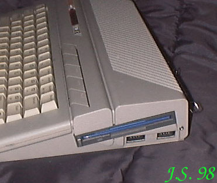
Poni¿ej prawej krawêdzi napêdu widoczny jest wkrêt,
który zast±pi³ brakuj±cy. Z ty³u widoczne s± zatrzaski od z³±cza
Centronics, które to z³±cze zastosowa³em do pod³±czenia zewnêtrznego
napêdu 720K 5,25". Interfejs Karin Maxi umocowa³em wewn±trz nad gniazdem
kartrid¿a. Simm 1M le¿a³ na podstawowym banku pamiêci,pozosta³a logika
umocowana by³a na istniej±cych uk³adach i po³±czona kynarem. Oryginalny
zasilacz ju¿ nie wystarcza³ do zasilania ca³o¶ci, wiêc zastosowa³em
impulsowy 5V/5A.
Dalsza modyfikacja objê³a domontowanie
dodatkowych systemów operacyjnych, w sumie by³o ich 8: 400/800, XL, XE,
XEPL, HIGH CHIP, QMEG, BIBO MONITOR i OMNI MONITOR. Te dwa ostatnie nie
by³y praktycznie wykorzystywane, ale wype³nia³y wolne miejsce w epromie.
Co ciekawe, wybór odpowiedniego systemu operacyjnego odbywa³ siê przy
wy³±czonym komputerze przez naciskanie przycisku po prawej stronie
napisu ATARI, a nazwa aktualnego wy¶wietlana by³a na o¶miomiejscowym
alfanumerycznym wy¶wietlaczu LED. Wymontowa³em go z jakiej¶ starej
gierki nabytej w sklepie na Bia³ostockiej (gdzie te czasy, gdzie...).
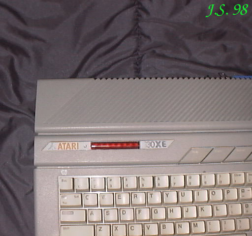
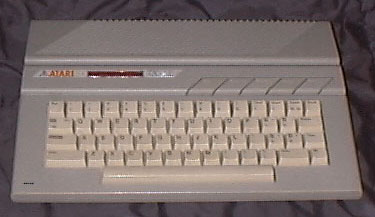
Pochwali³em siê tym na jakim¶ forum i pewien go¶æ z
Francji koniecznie chcia³ to mieæ. Sprzeda³em mu to w koñcu, bo chcia³em
zrobiæ nowsz± wersjê. Zanim siê do tego zabra³em ju¿ kolega z Francji
"zapotrzebowa³" jeszcze jeden taki zestaw. Zosta³em wiêc zmuszony
niejako do dalszych prac. Poszed³em nieco dalej i, z braku kolejnego
wy¶wietlacza, wymy¶li³em generator obrazu, który wy¶wietla³ aktualny
system na ekranie monitora, oczywi¶cie gdy komputer by³ wy³±czony. Wtedy
te¿ mo¿na by³o dokonaæ wyboru systemu za pomoc± naciskania klawisza
RESET. Mia³em sporo k³opotu z uzyskaniem stabilnego obrazu, a¿ w koñcu
zwyczajnie zer¿n±³em fragment uk³adu z TRS80. Obraz, a w³a¶ciwie 4
bitmapy obrazów o ró¿ni±cej siê tre¶ci i rozdzielczo¶ci 256X256
zawartych by³o w epromie 27C256, czyli na ka¿dy obraz przypada³o 8K. Tak
wiêc okroi³em ilo¶æ systemów do czterech, choæ uk³ad móg³ byæ w prosty
sposób rozbudowany do o¶miu systemów poprzez zastosowanie epromu 27C512
dla bitmap i 27C010 dla systemów. Kolejny bit licznika U9 (QC) powinien
byæ pod³±czony wtedy do A15 epromu bitmap i A16 epromu systemów. Obrazy
tworzy³em na pececie jakim¶ programem graficznym. By³y to czarno-bia³e
obrazy z tekstem wypisanym czcionk± tak± jak logo Atari. Poni¿ej
przedstawiam schemat uk³adu:
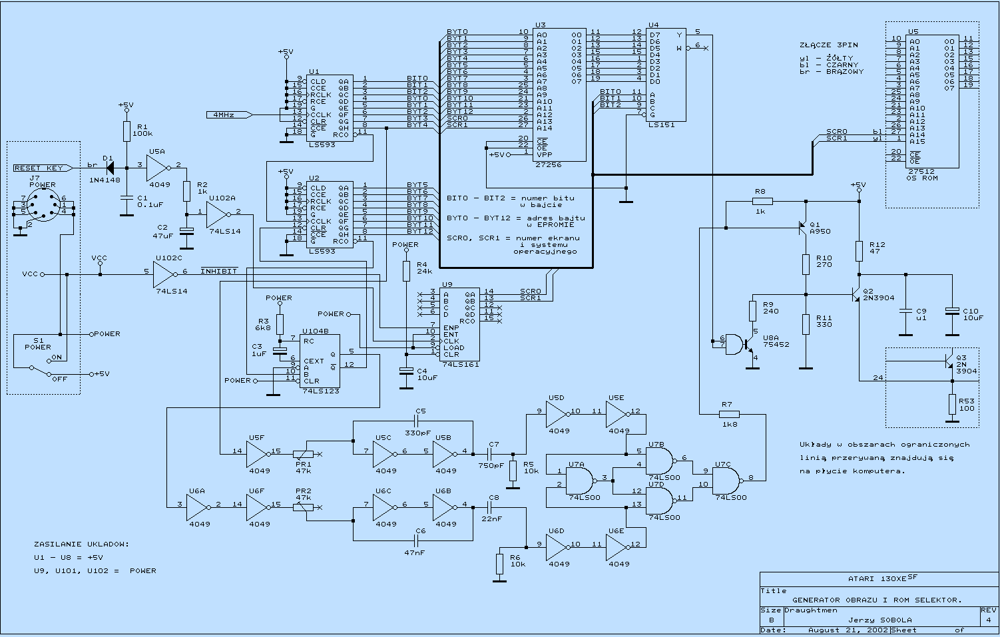
Szesnastobitowy licznik na uk³adach LS593 (U1 i U2)
taktowany jest czêstotliwo¶ci± 4MHz. Trzy najm³odsze bity licznika
(BIT0-BIT2) okre¶laj± numer bitu z bajtu w epromie U3, którego warto¶æ
(tego bitu) pojawi siê na wyj¶ciu Y uk³adu U4. Kolejne bity licznika
(BYT0-BYT12) okre¶laj± adres bajtu w epromie. Bajty s± sekwencyjnie
adresowane i ich warto¶æ pojawia siê na wyj¶ciu epromu. Powsta³ w ten
sposób shifter, na którego wyj¶ciu kolejno pojawiaj± siê piksele obrazu.
Gdy ostatni bit ostatniego bajtu obrazu pojawi siê na wyj¶ciu - starsze
bity BYT5-BYT12 s± zerowane przez uk³ad U104B (w tym przypadku jest to
wolna po³ówka uk³adu LS123 pracuj±cego w Karin Maxi)i generowany jest
impuls synchronizacji ramki. BYT4 licznika steruje tak¿e generacj±
impulów synchronizacji linii (zauwa¿my, ¿e impulsy te pojawiaj± siê
tak¿e w czasie trwania impulsu ramki). Uk³ady U5, U6 i U7 kszta³tuj±
zespolony sygna³ synchronizacji. Uk³ad U8A poprawia kszta³t przebiegów
(krawêdzie liter), a tranzystor T1 miesza sygna³ synchronizacji i
obrazu. Tanzystor T2 ma emiter po³±czony z emiterem tranzystora
wyj¶ciowego wizji komputera (Q3).
Uk³ad U9 to licznik zliczaj±cy ilo¶æ naci¶niêæ
klawisza RESET (ale tylko gdy komputer jest wy³±czony), tak wiêc stan
jego wyj¶æ okre¶la, który obraz i który system operacyjny jest aktualnie
wybrany. Po w³±czeniu zasilania komputera na wej¶ciu ENP tego uk³adu
pojawia siê stan niski INHIBIT i dalsze naciskanie resetu nie wp³ywa na
stan wyj¶æ.
Uk³ad U5A i uk³ad U102A (wolny inwerter
Schmitta z generatora kwarcowego Karin Maxi) kszta³tuj± impulsy z
klawisza RESET. Dioda D1 odcina wp³yw tych uk³adów na normalne dzia³anie
resetu.
Jeszcze s³ów parê na temat bitmap. Otó¿
pecetowa bitmapa (plik o rozszerzeniu bmp) ma 62 bajtowy nag³ówek, który
nie powinien siê znale¼æ w epromie. Obraz zawarty w 8K pamiêci (8192
bajty) tworzy plik o d³ugo¶ci 8254 bajty. Software programatora epromów
pozwala na pominiêcie nag³ówka i zapis "czystej" bitmapy do epromu.
Uk³ad U4 posiada te¿ wyj¶cie zanegowane W, co
pozwala na odwrócenie obrazu (inverse video). Aby uk³ad poprawnie
dzia³a³ konieczne jest rozdzielenie wyprowadzeñ wy³±cznika zasilania,
które s± zwarte na p³ycie. Mo¿na te¿ przerobiæ z³±cze zasilacza tak, by
do³±czyæ równie¿ napiêcie +12V do zasilania np. zewnêtrznego napêdu
5,25" (tak by³o to zrobione w pierwszej wersji komputera).
2. Monta¿ wewnêtrznego FDD krok po kroku
Do zamontowania wewn±trz komputera Atari XE
nadaj± siê napêdy dyskietek 3,5" od laptopów. Na rynku jest jeszcze
dostêpnych wiele modeli, ja u¿y³em modelu D353F3 firmy Mitsumi. Aby
flopka zamontowaæ do wnêtrza atarynki (w tym wypadku 130XE) trzeba siê
trochê natrudziæ. Niezbêdne narzêdzia to: imad³o, m³otek, wiertarka z
kompletem wierte³, pi³ka do metalu, pilniki g³adzik i zdzierak,
suwmiarka lub dok³adna miarka, punktak i no¿yce do blachy.
Potrzebna te¿ bêdzie cienka blacha grubo¶ci 0.5mm, np.
z puszek, do wykonania uchwytów mocuj±cych flopek w komputerze.
Pracê zaczniemy od zmierzenia flopka (szeroko¶æ,
d³ugo¶æ i grubo¶æ, rozstaw otworów mocuj±cych). Napêd nale¿y u³o¿yæ w
komputerze (z p³yt± g³ówn± i rozszerzeniami) w takim po³o¿eniu, jakie
bêdzie zajmowa³. Nale¿y zwróciæ uwagê, aby nie wystawa³ ponad wystêpy
oporowe klawiatury, najlepiej by by³ niewielki odstêp miêdzy flopkiem i
klawiatur±. Warunki te wymuszaj± sko¶ne u³o¿enie napêdu. Mo¿e byæ
konieczne przekonstruowanie istniej±cych rozszerzeñ tak, by uzyskaæ
odpowiedni± ilo¶æ miejsca na flopek, elementy mocuj±ce i interfejs. Ja
wybra³em interfejs Karin Maxi, ale mo¿na te¿ zastosowaæ XF351. Musia³em
usun±æ oryginalne p³ytki Simple Stereo i IO Board oraz zaprojektowaæ
nowe, bardziej p³askie. Interfejs Karin Maxi umie¶ci³em pod flopkiem,
Simple Stereo po³±czy³em z interfejsem SIO2USB i zajmuje on miejsce
miêdzy flopkiem i z³±czem klawiatury.
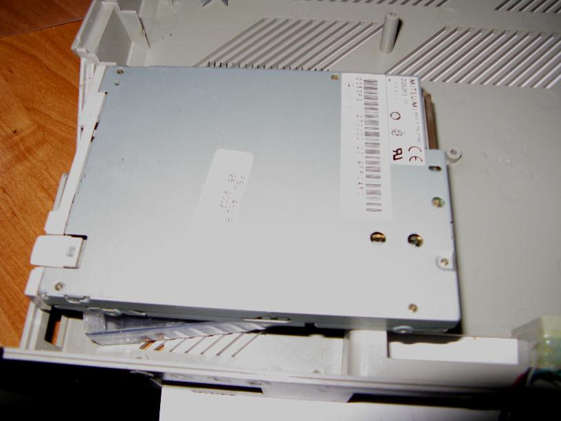
Zaznaczamy wewn±trz obudowy komputera po³o¿enie flopka, demontujemy
wszystko z obudowy i zaczynamy ciêcie dolnej obudowy. Ja u¿ywam do tego
pi³ki do metalu z w±skim ostrzem. Zostawiamy naddatek na dopi³owanie.
Ostatni± fazê pi³owania wykonujemy g³adzikiem uwa¿aj±c, by nie
przeci±gn±æ ponad wymiar. Czêsto sprawdzamy jak flopek wchodzi w
szczelinê.
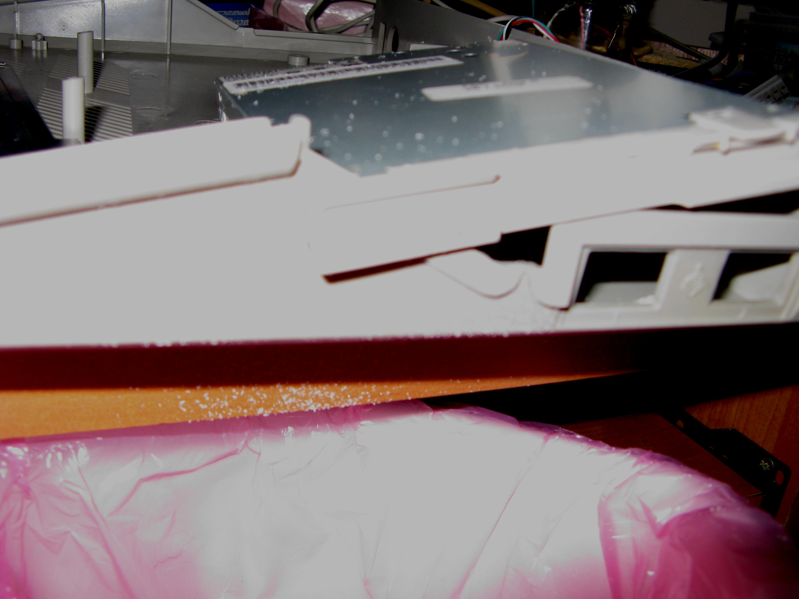
Gdy dopasowanie dolnej obudowy zostanie ukoñczone -
sk³adamy obie po³ówki i zaznaczamy od ¶rodka na górnej po³ówce linie
ciêcia.
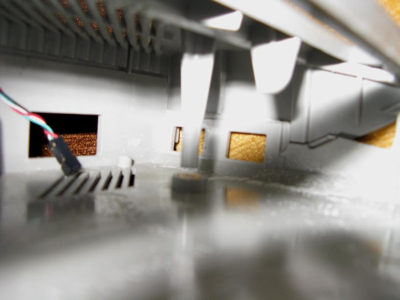
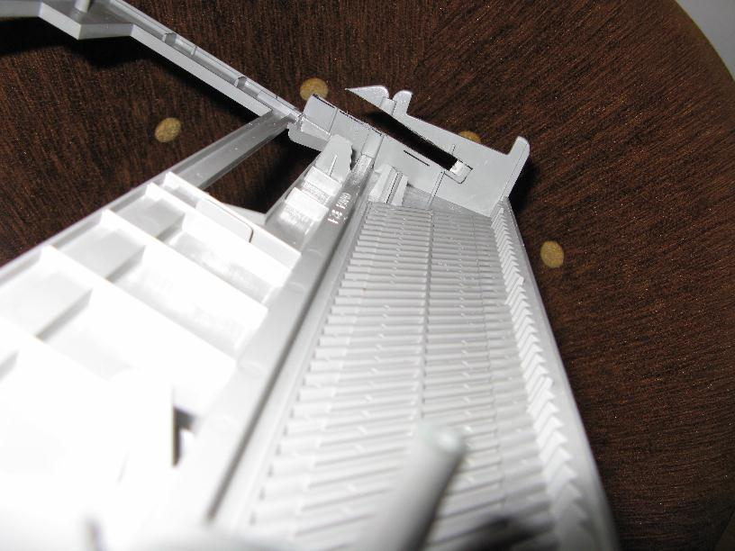
Odcinamy te¿ s³upek mocuj±cy i p³aski wystêp ogranicznika klawiatury, co widaæ na poni¿szym zdjêciu:
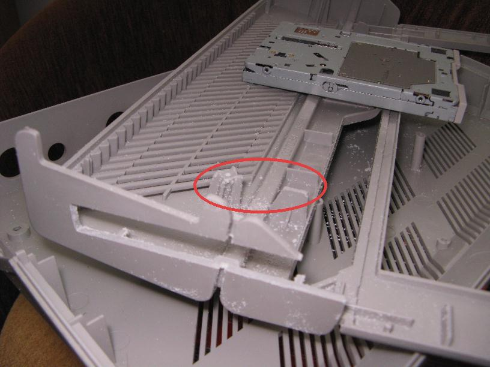
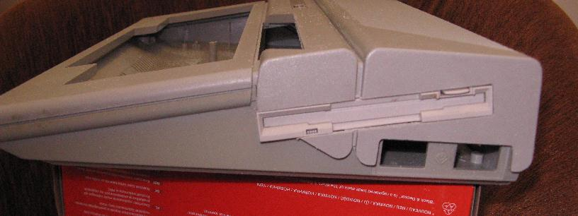
Po ostatecznym dopi³owaniu trzeba jeszcze lekko
sfazowaæ krawêdzie wyciêtego otworu. Najtrudniejsz± czê¶æ pracy mamy za
sob±. Teraz pozostaje wyciêcie wsporników mocuj±cych flopek, ich
odpowiednie dogiêcie, wywiercenie niezbêdnych otworów i próbne
umocowanie flopka celem sprawdzenia dopasowañ ca³o¶ci.
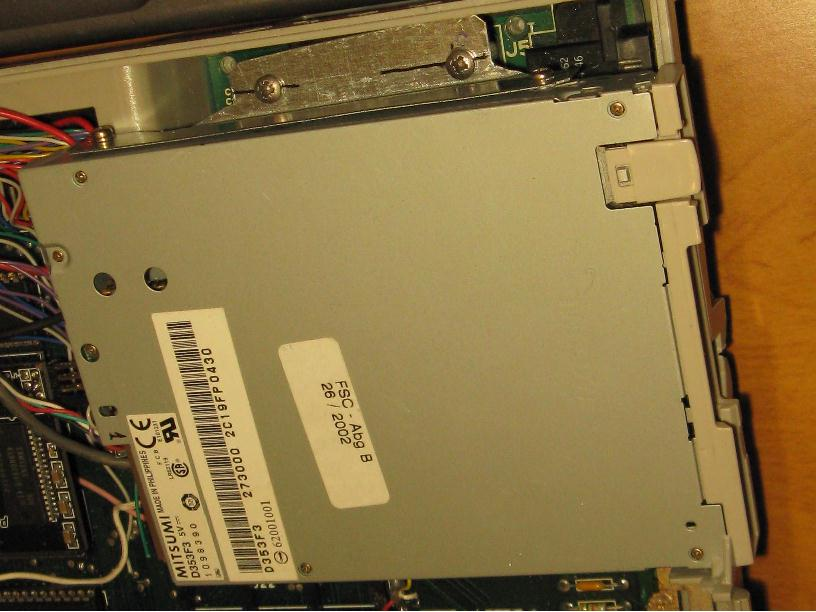
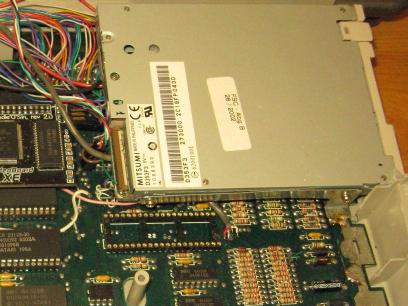
Napêd jest umocowany do p³yty g³ównej. Do lewego zamocowania
wykorzysta³em s³upki po zdemontowanym IO Board (pod spodem p³yty
poxipolem przyklei³em pod nimi nakrêtki M3), a prawe mocowanie jest
przylutowane do masy na obwodzie p³yty. Poza flopkiem wewn±trz atarynki
znalaz³ miejsce te¿ interfejs KMK IDE 2.0, VBXE, Simple Stereo, SIO2USB,
AOSD i 1M RAM.
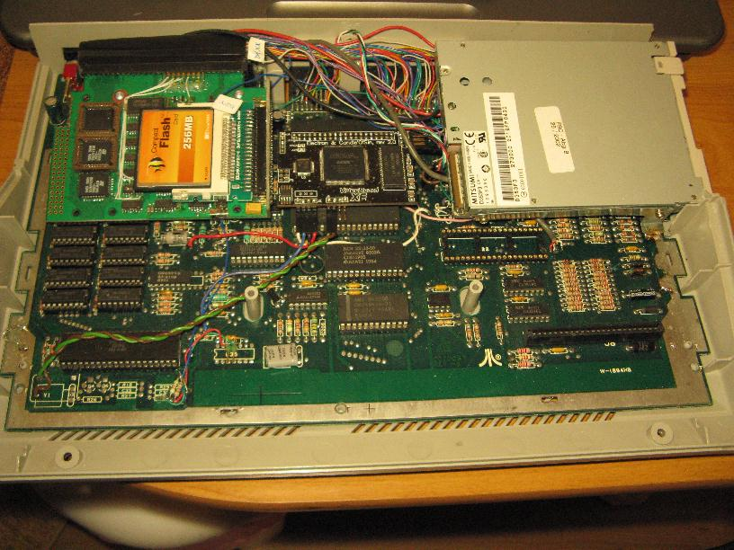
3. Budowa drukarki 3D
Ostatnio mocno zainteresowa³a mnie mo¿liwo¶æ
wykonania elementów plastikowych technologi± druku 3D. Wykonanie obudowy
do w³a¶nie zrobionej p³ytki to bêdzie pestka. No to do roboty. Na
pocz±tek trzeba sobie zmontowaæ drukarkê najtañsz± i najprosztsz± -
Prusa v.2, ¿eby poznaæ tajniki druku, a potem siê zobaczy.
Zacz±³em gromadziæ materia³y: szpilki budowlane M8, nakrêtki, podk³adki,
g³adkie prêty z nierdzewki, ³o¿yska toczne 608ZZ i liniowe LM8UU oraz
zestaw plastików do po³±czenia ¿elastwa do kupy.
W internecie jest sporo na ten temat, przestudiowa³em forum Reprapowo,
¶ci±gn±³em instrukcjê budowy Prusa i2, poci±³em prêty na okre¶lon±
d³ugo¶æi zmontowa³em rusztowanie:
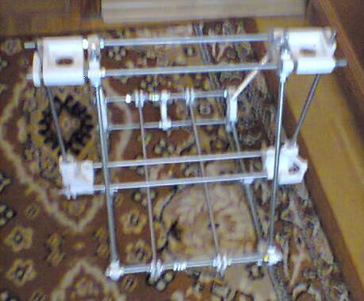
Zdjêcie marne, zrobione komórk± i nieostre, ale to
jedyne z tego okresu. Teraz oczekiwanie na dop³yw kasy, potem zakup
silników krokowych i pasków. I dalsze studiowanie materia³ów. Wiele
wyra¿eñ jest nowych, zaczerpniêtych z jêz. angielskiego, trzeba je
zapamiêtaæ:
Filament - materia³ z którego powstaje wydruk, wystêpuj±cy w
postaci drutu w zwojach bez lub na szpuli. Drut ten ma najczê¶ciej
¶rednicê 3mm lub 1,75mm.
Hoted bed lub Hotbed - Ogrzewana powierzchnia, na której powstaje wydruk.
Hotend - kawa³ek metalu, najczê¶ciej alumimium lub mosi±dzu, w
którym umieszczona jest grza³ka, termistor i dysza, stanowi±cy czê¶æ
g³owicy drukuj±cej.
Hobbed Bolt - walec z naciêtymi zêbami o ró¿nym kszta³cie.
Ekstruder - zespó³ wyciskaj±cy nitkê roztopionego materia³u.
Napêdzany jest silnikiem krokowym, który przez przek³adniê obraca hobbed
bolt i przesuwa filament wg³±b g³owicy.
Retrakcja - cofniêcie filamentu w ekstruderze na czas pustego przebiegu g³owicy (Travel)
Skirt - dos³ownie spódnica, budowana w czasie druku dodatkowa os³ona wydruku.
Brim - drukowana podk³adka o wymiarach nieco wiêkszych od
w³a¶ciwego wydruku, zmniejszaj±ca podwijanie brzegów wydruku wskutek
skurczu tworzywa.
Perymetr - cienka obwódka wokó³ modelu, maj±ca na celu ustabilizowanie wyp³ywu tworzywa z dyszy na pocz±tku drukowania.
Kupi³em te¿ materia³ na hotbed - 4mm blachê duralow± o
wymiarach 225 X 225 mm. Zacz±³em robotê od pociêcia k±townika
aluminiowego na krótkie odcinki o d³ugo¶ci rezystorów ceramicznych,
których mia³em spory zapas. Blachê, po wywierceniu otworów na mocowanie
z³±czki na przewody i wkrêty poziomuj±ce oczy¶ci³em i odt³u¶ci³em. Za
pomoc± kleju termoprzewodz±cego przyklei³em rezystory i k±towniki. Te
ostatnie s³u¿± do lepszego odprowadzenia ciep³a od rezystorów. Po
zlutowaniu rezystorów i przyklejeniu termistora oklei³em spód ta¶m±
kaptonow±. Przykrêci³em te¿z³±czkêdo zasilania. Po miesi±cu drukowania
z³±czkêtrafi³ szlag, wiêc przewody zasilania sto³u przylutowa³em
bezpo¶rednio i przyklei³em je silikonem termoprzewodz±cym. Spód sto³u w
celu minimalizacji strat ciep³a pokry³em piank± poliuretanow± i
zestruga³em j± do odpowiedniej grubo¶ci:
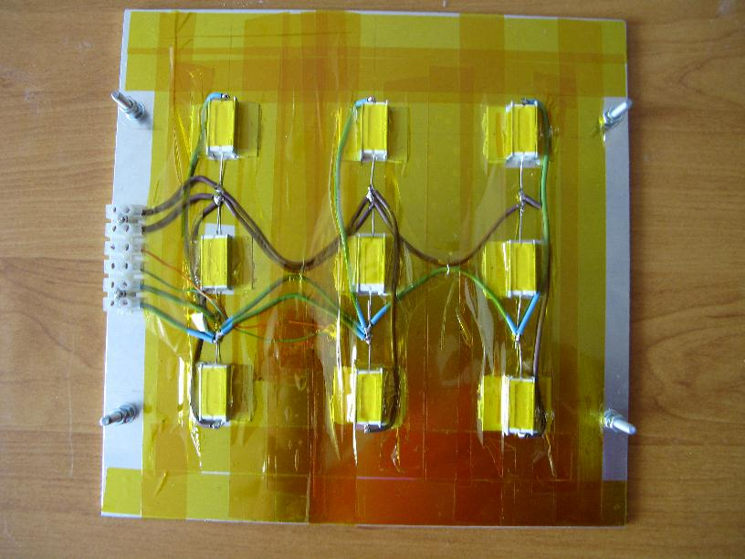
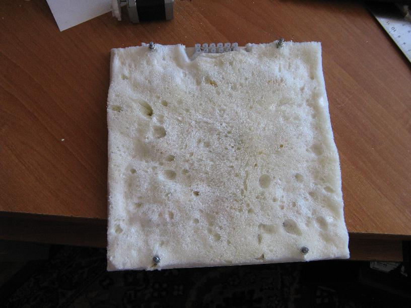
Stó³ ogrzewa 9 rezystorów 10W
po³±czonych równolegle. Stó³ przy zasilaniu 12V pobiera 10,8A co daje
moc zasilania 130W. Jest to nieco za ma³o. ale po nakryciu sto³u kartk±
papieru w czasie rozgrzewania pozwala na osi±gniêcie temperatury 100
stopni po 15min.
Kupi³em silniki
Ci±g dalszy nast±pi...
|
POCZ¡TEK |
HISTORIA |
MUZEUM |
SCHEMATY |
SERWIS |
|
LITERATURA |
MOJE KONSTRUKCJE |
O MNIE |